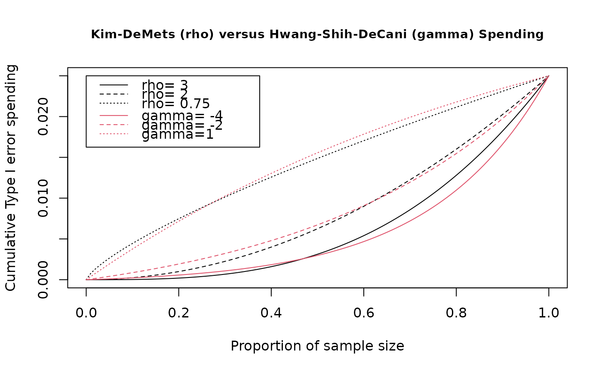

sfPower.RdThe function sfPower() implements a Kim-DeMets (power) spending
function. This is a flexible, one-parameter spending function recommended by
Jennison and Turnbull (2000). Normally it will be passed to
gsDesign() in the parameter sfu for the upper bound or
sfl for the lower bound to specify a spending function family for a
design. In this case, the user does not need to know the calling sequence.
The calling sequence is useful, however, when the user wishes to plot a
spending function as demonstrated below in examples.
A Kim-DeMets spending function takes the form $$f(t;\alpha,\rho)=\alpha
t^\rho$$ where \(\rho\) is the value
passed in param. See examples below for a range of values of
\(\rho\) that may be of interest (param=0.75 to 3 are
documented there).
sfPower(alpha, t, param)
| alpha | Real value \(> 0\) and no more than 1. Normally,
|
|---|---|
| t | A vector of points with increasing values from 0 to 1, inclusive. Values of the proportion of sample size/information for which the spending function will be computed. |
| param | A single, positive value specifying the \(\rho\) parameter for which Kim-DeMets spending is to be computed; allowable range is (0,15] |
An object of type spendfn. See Spending_Function_Overview for further details.
The manual is not linked to this help file, but is available in library/gsdesign/doc/gsDesignManual.pdf in the directory where R is installed.
Jennison C and Turnbull BW (2000), Group Sequential Methods with Applications to Clinical Trials. Boca Raton: Chapman and Hall.
library(ggplot2) # design a 4-analysis trial using a Kim-DeMets spending function # for both lower and upper bounds x <- gsDesign(k = 4, sfu = sfPower, sfupar = 3, sfl = sfPower, sflpar = 1.5) # print the design x#> Asymmetric two-sided group sequential design with #> 90 % power and 2.5 % Type I Error. #> Upper bound spending computations assume #> trial continues if lower bound is crossed. #> #> Sample #> Size ----Lower bounds---- ----Upper bounds----- #> Analysis Ratio* Z Nominal p Spend+ Z Nominal p Spend++ #> 1 0.282 -0.52 0.3015 0.0125 3.36 0.0004 0.0004 #> 2 0.564 0.53 0.7028 0.0229 2.76 0.0029 0.0027 #> 3 0.846 1.32 0.9072 0.0296 2.36 0.0092 0.0074 #> 4 1.128 2.03 0.9788 0.0350 2.03 0.0212 0.0145 #> Total 0.1000 0.0250 #> + lower bound beta spending (under H1): #> Kim-DeMets (power) spending function with rho = 1.5. #> ++ alpha spending: #> Kim-DeMets (power) spending function with rho = 3. #> * Sample size ratio compared to fixed design with no interim #> #> Boundary crossing probabilities and expected sample size #> assume any cross stops the trial #> #> Upper boundary (power or Type I Error) #> Analysis #> Theta 1 2 3 4 Total E{N} #> 0.0000 0.0004 0.0027 0.0073 0.0116 0.0221 0.579 #> 3.2415 0.0507 0.3248 0.3619 0.1626 0.9000 0.768 #> #> Lower boundary (futility or Type II Error) #> Analysis #> Theta 1 2 3 4 Total #> 0.0000 0.3015 0.4138 0.2008 0.0619 0.9779 #> 3.2415 0.0125 0.0229 0.0296 0.0350 0.1000# plot the spending function using many points to obtain a smooth curve # show rho=3 for approximation to O'Brien-Fleming and rho=.75 for # approximation to Pocock design. # Also show rho=2 for an intermediate spending. # Compare these to Hwang-Shih-DeCani spending with gamma=-4, -2, 1 t <- 0:100 / 100 plot(t, sfPower(0.025, t, 3)$spend, xlab = "Proportion of sample size", ylab = "Cumulative Type I error spending", main = "Kim-DeMets (rho) versus Hwang-Shih-DeCani (gamma) Spending", type = "l", cex.main = .9 )legend( x = c(.0, .375), y = .025 * c(.65, 1), lty = 1:3, legend = c("rho= 3", "rho= 2", "rho= 0.75") )legend( x = c(.0, .357), y = .025 * c(.65, .85), lty = 1:3, bty = "n", col = 2, legend = c("gamma= -4", "gamma= -2", "gamma=1") )